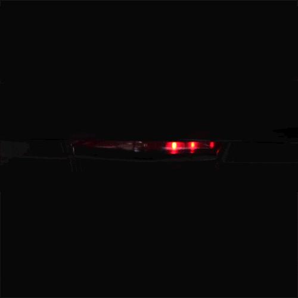
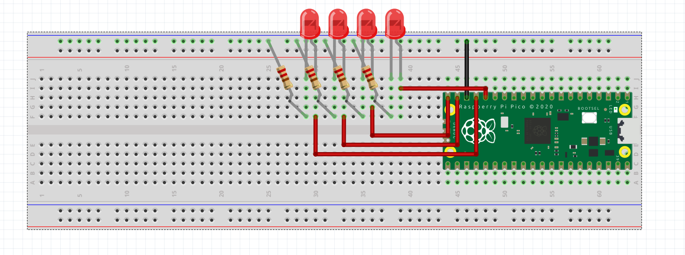

Create a BinaryCounter class for the four LEDs in Thonny or your preferred IDE.
The class should:
Use the GPIO pins already defined in the circuit:
GP15, GP14, GP13, GP12
You will test your knowledge using what you've learned in the previous Lesson 3.
Build the solution using the Python class concepts you already know. and the wiring example

Add a fifth LED to your circuit and create a moving scanner pattern.
The light should move from the first LED to the fifth LED, then reverse direction back to the first LED, continuously repeating the pattern.
Pattern: LED 1 → LED 2 → LED 3 → LED 4 → LED 5 → LED 4 → LED 3 → LED 2 → repeat
Create the pattern using your own code and control the speed of the movement.
---------------